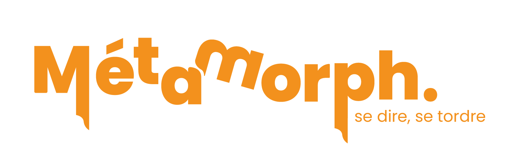
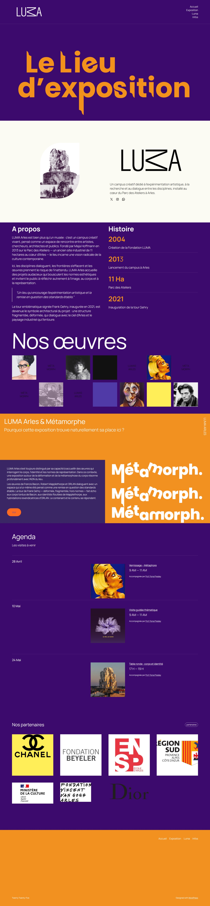
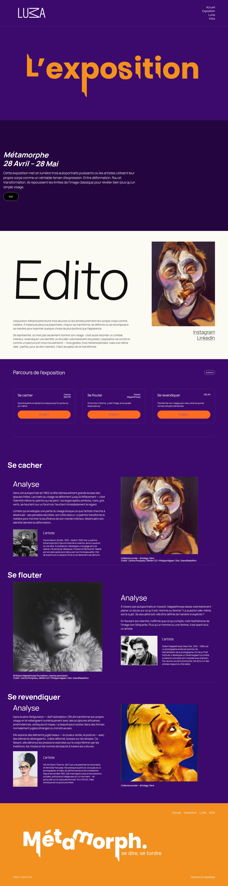
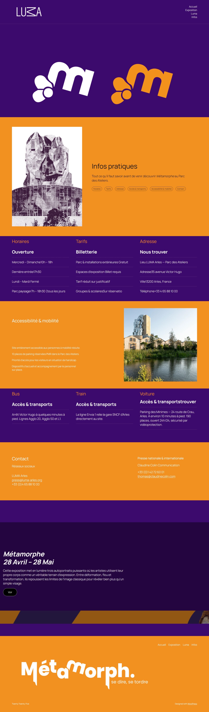

Parti d'une série d'autoportraits, ce projet a abouti à la conception d'une exposition fictive : Métamorphe. Trois artistes, trois gestes Bacon qui se cache, Mapplethorpe qui se floute, ORLAN qui se revendique. Autour de cette exposition : un dossier de presse complet, une identité visuelle forte, et un site web pensé dans la posture du musée qui l'accueille.
Interface conçue pour plonger l'utilisateur dans l'univers Métamorphe. Navigation fluide, hiérarchie visuelle forte, et une direction artistique cohérente du hero jusqu'aux pages de contenu.



